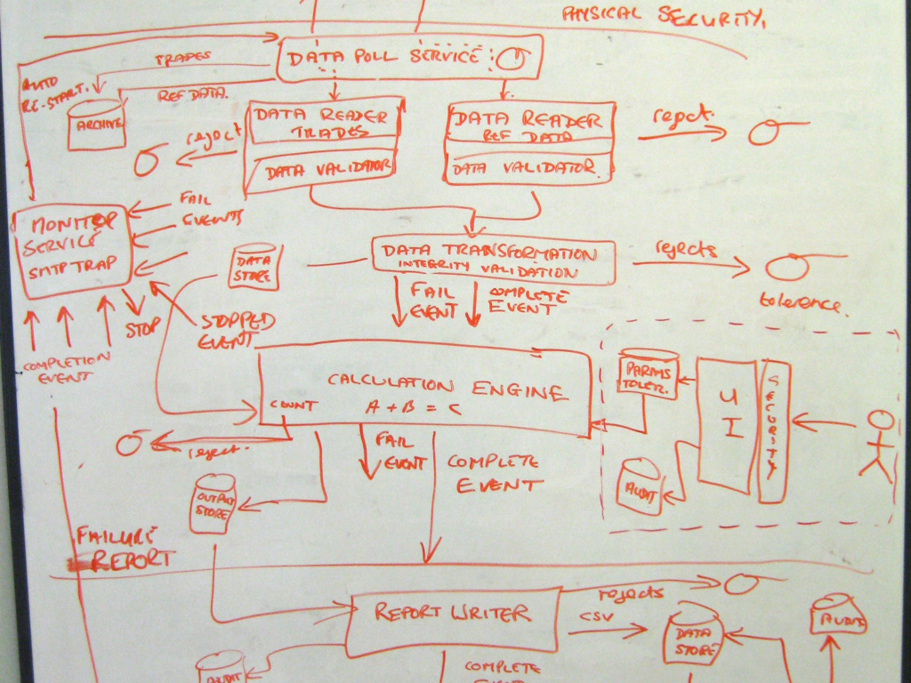
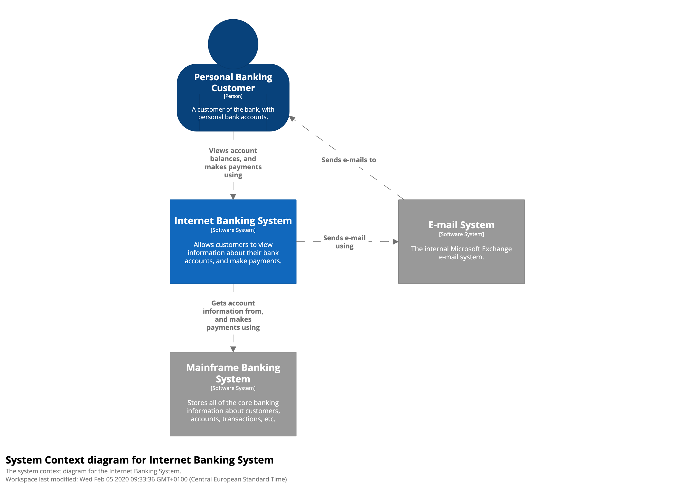

مدل C4 برای تجسم معماری نرم افزار
Context, Containers, Components, Code
عجله داری؟ میتونی صفحه ویکی ما رو بخونی و 5 دقیقه معرفی مدل C4 در InfoQ
مدل C4 برای معماری نرم افزار
The C4 model for software architecture
O modelo C4 de documentação para Arquitetura de Software
用于软件架构的C4模型
ソフトウェアアーキテクチャのためのC4モデル
یا "تجسم معماری نرم افزار با مدل C4" را تماشا کنید
مقدمه
از کسی در صنعت ساختمان بخواهید تا با معماری یک ساختمان به صورت بصری ارتباط برقرار کند و شما با نقشه های سایت ، نقشه های طبقات ، نماهای ارتفاعی ، نماهای سطح مقطع و نقشه های جزئی روبه رو خواهید شد. در مقابل ، از یک توسعه دهنده نرم افزار بخواهید معماری نرم افزار یک سیستم نرم افزاری را با استفاده از نمودارها ارائه کند و به احتمال زیاد با جعبه ها و خطوط به هم ریخته مواجه شده باشید ... ناسازگاری متن (کدگذاری رنگ ، اشکال ، سبک های خط و غیره) ، نامگذاری مبهم ، روابط بدون مشخصه ، اصطلاحات عمومی ، گزینه های از دست رفته فناوری ، انتزاعات مخلوط و غیره...




به عنوان یک صنعت ، ما زبانهای یکپارچه مدل سازی (UML) ، ArchiMate و SysML را داریم ، اما سوال اینکه آیا اینها روشهایی موثر برای برقراری ارتباط با معماری نرم افزار ارائه می دهند، اغلب بی ربط است زیرا بسیاری از تیم ها آنها را به خاطر نمودارهای ساده "جعبه ها و خطوط" (boxes and lines) کنار گذاشته اند. کنار گذاشتن این زبان های مدل سازی یک چیز است اما شاید در رقابت چابکی ، بسیاری از تیم های توسعه دهنده نرم افزار توانایی برقراری ارتباط بصری را از دست داده اند.
نقشه هایی از کد شما
مدل C4 به عنوان راهی برای کمک به تیم های توسعه دهنده نرم افزار در توصیف و برقراری ارتباط معماری نرم افزار ، چه در جلسات طراحی پیش رو و چه در هنگام مستند سازی از طریق بازنگری مجدد طرحهای یک کد موجود ، ایجاد شده است. این روش؛ روشی است برای ایجاد نقشه های راه کد شما، در سطوح مختلف از جزئیات ، به همان روشی که می توانید از چیزی مانند Google Maps برای بزرگنمایی و کوچک کردن منطقه مورد نظر خود استفاده کنید.
Google Street View مانند کد منبع ، نمای بسیار کمی از سطح و سطح دقیق را ارائه می دهد.
اگر بزرگنمایی کنید ، پیمایش در یک محیط ناآشنا آسانتر می شود.
بزرگنمایی بیشتر زمینه اضافی که شاید از آن آگاهی نداشته باشید را فراهم می کند.

سطوح مختلف بزرگنمایی به شما این امکان را می دهد داستان های مختلفی را برای مخاطبان مختلف تعریف کنید.
اگرچه در درجه اول معماران و توسعه دهندگان نرم افزار هستند، اما مدل C4 راهی را برای تیم های توسعه دهنده نرم افزار فراهم می کند تا به طور کارآمد و موثر با معماری نرم افزار از طریق بازنگری مجدد طرحهای خود و یا در طراحی های پیشرو ، در سطوح مختلف از جزئیات ، گفتن داستان های مختلف برای مخاطبان گوناگون، طرح های اولیه انجام طراحی نمای کاربری یا مستندسازی از طریق بازنگری مجدد طرحها از یک کد موجود ارتباط برقرار کنند.

سطح 1: یک نمودار سطح مفهومی (Context) نقطه شروع را نشان می دهد ، که نشان می دهد سیستم نرم افزار در دامنه چگونه با دنیای اطراف آن متناسب است.

سطح 2: یک نمودار کانتینر (Container) در محدوده سیستم نرم افزار بزرگنمایی می کند و بلوک های ساختمانی سطح بالا را نشان می دهد.

سطح 3: یک نمودار اجزا (Component) در یک کانتینر بزرگنمایی می شود و اجزای داخل آن را نشان می دهد.

سطح 4: یک نمودار کد (code) (به عنوان مثال کلاس UML) می توان برای بزرگنمایی یک جز خاص جداگانه استفاده کرد ، که نحوه اجرای آن را نشان می دهد.

سطوح مختلف بزرگنمایی به شما امکان می دهد داستان های مختلفی را برای مخاطبان مختلف تعریف کنید.
مدل C4 یک رویکرد "انتزاع اول" (abstraction-first) برای نمودارسازی معماری نرم افزار است ، که مبتنی بر انتزاعاتی که بیانگر نحوه تفکر و ساخت نرم افزار توسط معماران و توسعه دهندگان نرم افزار است میباشد و وجود مجموعه کوچکی از انتزاعات و انواع نمودار ، یادگیری و استفاده از آن را آسان می کند.
اهمیت نمودارهای معماری نرم افزار خوب
نمودارهای خوب معماری نرم افزار به ارتباطات (چه در داخل و چه در خارج از تیم توسعه نرم افزار / تیم محصول) ، ورود اعضای جدید به تیم، شناسایی ریسک (به عنوان مثال ریسک پذیری), مدل سازی تهدید (threat modelling) (به عنوان مثال با STRIDE و LINDDUN), غیره کمک می کند. نمودارها کمک می کنند تا درک همه افراد از نرم افزار ساخته شده هماهنگ شود ، بنابراین به کارآیی بیشتر تیم کمک می کند.
انتزاع (Abstractions)
برای ایجاد این نقشه ها از کد شما ، ابتدا به یک مجموعه مشترکی از انتزاعات برای ایجاد یک زبان همه فهم نیاز داریم که بتوانیم برای توصیف ساختار ایستایی یک سیستم نرم افزاری استفاده کنیم. مدل C4 ساختارهای ساکن یک سیستم نرم افزاری را از نظر کانتینر ، اجزا و کد در نظر می گیرد. و مردم از سیستم های نرم افزاری تولید شده توسط ما استفاده می کنند.

یک سیستم نرم افزاری از یک یا چند کانتینر تشکیل شده است (برنامه های وب ، برنامه های تلفن همراه ، برنامه های دسک تاپ ، پایگاه داده ، سیستم فایل و غیره) که هر کدام حاوی یک یا چند جز هستند که به نوبه خود توسط یک یا چند عنصر کد پیاده سازی می شوند ( به عنوان مثال کلاس ها ، رابط ها ، اشیا، ، توابع و غیره).
یک تجسم نمونه ای از مدل معماری نرم افزار ، نشانگر ماهیت سلسله مراتبی عناصر سازنده ساختار ایستا.
شخص (Person)
یک شخص نماینده یکی از کاربران انسانی سیستم نرم افزاری شما است (به عنوان مثال بازیگران ، نقش ها ، شخصیت ها و غیره).
سیستم نرم افزار (Software System)
یک سیستم نرم افزاری بالاترین سطح انتزاع است و چیزی را توصیف می کند که به کاربران خود اعم از انسانی یا غیرمجاز ارزش می بخشد. این شامل سیستم نرم افزاری است که مدلسازی می کنید و سایر سیستم های نرم افزاری که سیستم نرم افزاری شما به آن وابسته است (یا بالعکس). در بسیاری از موارد ، یک سیستم نرم افزاری "تحت تملک" یک تیم توسعه دهنده نرم افزار است.
کانتینر (Container)
منظور ما از کانتینر، به مفهومی مشابه در داکر(Docker) اشاره نمیکند. در اینجا کانتینر نشان دهنده یک برنامه کاربردی یا یک ذخیره داده است. کانتینر چیزی است که برای کار با سیستم نرم افزاری کلی باید در حال اجرا باشد. در اصطلاح واقعی ، کانتینر چیزی شبیه به این موارد زیر است:
- برنامه وب سمت سرور(Server-side web application): یک برنامه وب Java EE که روی Apache Tomcat اجرا می شود ، یک برنامه ASP.NET MVC که با Microsoft IIS اجرا می شود ، یک برنامه Ruby on Rails که با WEBrick اجرا می شود ، یک برنامه Node.js و غیره
- برنامه وب سمت مشتری(Client-side web application): برنامه جاوا اسکریپت در مرورگر وب با استفاده از Angular ، Backbone.JS ، jQuery و غیره اجرا می شود.
- برنامه دسک تاپ سمت مشتری(Client-side desktop application): یک برنامه دسک تاپ ویندوز با استفاده از WPF ، یک برنامه دسک تاپ OS X که با استفاده از Objective-C نوشته شده است ، یک برنامه دسک تاپ کراس پلتفرم که با استفاده از JavaFX و غیره نوشته شده است.
- برنامه تلفن همراه(Mobile app): برنامه Apple iOS ، برنامه Android ، برنامه Microsoft Windows Phone و غیره.
- برنامه کنسول سمت سرور(Server-side console application): یک برنامه مستقل (به عنوان مثال "public static void main") ، یک فرایند دسته ای و غیره.
- عملکرد بدون سرور(Serverless function): یک عملکرد بدون سرور منفرد(منظور از این تکنولوژی، تکنولوژی جدیدی هست که دارد جایگزین کلود کامپیوتینگ می شود) (به عنوان مثال Amazon Lambda ، Azure Function و غیره).
- بانک اطلاعاتی (Database): اسکیما یا پایگاه داده در سیستم مدیریت پایگاه داده رابطه ای ، فروشگاه اسناد ، پایگاه داده گراف و غیره مانند MySQL ، Microsoft SQL Server ، پایگاه داده Oracle ، MongoDB ، Riak ، Cassandra ، Neo4j و غیره.
- Blob یا فروشگاه محتوا(Blob or content store) : : فروشگاه Blob (منظور سرویسهای کلودی هستند که امکان ذخیره سازی فایلها شما را در ابعاد سفارشی و وسیع میدهند) (به عنوان مثال Amazon S3 ، Microsoft Azure Blob Storage و غیره) یا شبکه تحویل محتوا (به عنوان مثال Akamai ، Amazon CloudFront و غیره).
- سیستم فایل (File system): یک سیستم فایل کامل محلی یا بخشی از یک سیستم پرونده شبکه بزرگتر (به عنوان مثال SAN ، NAS و غیره)..
- Shell script: یک اسکریپت پوسته منفرد که به زبان Bash و غیره نوشته شده است.
- و غیره
کانتینر در اصل یک زمینه یا مرز است که در آن برخی کدها اجرا می شوند یا برخی از داده ها ذخیره می شوند. و هر کانتینر یک محیط قابل اجرا به صورت جداگانه/ قابل اجرا یا محیط زمان اجرا در فضای فرآیند خود است (اما نه همیشه). به همین دلیل ، ارتباط بین کانتینرها معمولاً به شکل یک ارتباط بین فرآیند است.
اجزا (Component)
کلمه "جز یا اجزا component" یک اصطلاح بسیار سنگین در صنعت توسعه نرم افزار است ، اما در این زمینه یک جز component گروهی از عملکردهای مرتبط است که در پشت یک رابط کاملا مشخص تعریف شده اند. اگر از زبانی مثل Java یا C # استفاده می کنید ، ساده ترین راه برای فكر كردن به یك جزء این است كه این مجموعه از كلاس های پیاده سازی پشت یك رابط است. جنبه هایی مانند نحوه بسته بندی آن اجزا (به عنوان مثال یک جزء در مقابل بسیاری از اجزا در هر پرونده JAR ، DLL ، کتابخانه مشترک و غیره) یک وابستگی مجزا و متعامد است.
نکته مهمی که در اینجا باید به آن توجه شود این است که همه اجزای داخل یک کانتینر معمولاً در یک فضای پردازشی اجرا می شوند. در مدل C4 ، اجزا واحدهای توزیع جداگانه نیستند.
نمودارهای اصلی (Core diagrams)
تجسم کردن این سلسله مراتب انتزاعات پس از ایجاد مجموعه ای از نمودارهای Context ، Container ، Component و (به صورت اختیاری) Code (به عنوان مثال کلاس UML) انجام می شود. نام C4 از همین جا آمده است.
سطح 1: نمودار زمینه سیستم (System Context diagram)
نمودار System Context یک نقطه شروع خوب برای نمودار نویسی و مستند سازی یک سیستم نرم افزاری است که به شما این امکان را می دهد که به عقب بروید و تصویر کلی از سیستم را مشاهده کنید. نموداری رسم کنید که سیستم شما را بصورت یک جعبه در مرکز احاطه شده توسط کاربران آن و سایر سیستمهایی که با آنها تعامل دارد ، نشان دهید.
جزئیات در اینجا مهم نیست زیرا این نمای کوچک شده شماست که تصویری بزرگ از منظره سیستم را نشان می دهد. در اینجا تمرکز باید بر روی افراد (بازیگران ، نقش ها ، شخصیت ها و غیره) و سیستم های نرم افزاری باشد تا فناوری ها ، پروتکل ها و سایر جزئیات سطح پایین. این نوعی نمودار است که می توانید به افراد غیر فنی نیز نشان دهید.
دامنه (Scope): یک سیستم نرم افزاری واحد.
عناصر اصلی (Primary elements): دامنه سیستم نرم افزاری.
عناصر پشتیبانی کننده (Supporting elements): اشخاص (به عنوان مثال کاربران ، بازیگران ، نقش ها یا شخصیت ها) و سیستم های نرم افزاری (وابستگی های خارجی) که از نظر دامنه مستقیماً به سیستم نرم افزار متصل هستند. به طور معمول این سیستم های نرم افزاری دیگر خارج از محدوده یا مرز سیستم نرم افزاری خود شما هستند و شما مسئولیت و مالکیت آنها را ندارید.
مخاطبان مورد نظر (Intended audience): همه ، اعم از فنی و غیر فنی ، در داخل و خارج تیم توسعه نرم افزار.
سطح 2: نمودار کانتینر (Container diagram)
وقتی فهمیدید که سیستم شما چگونه با محیط کلی فناوری منطبق است ، قدم بعدی واقعاً مفید ، بزرگنمایی مرز سیستم با نمودار کانتینر است. "کانتینر" چیزی شبیه به یک برنامه وب سمت سرور ، برنامه تک صفحه ای ، برنامه دسک تاپ ، برنامه تلفن همراه ، طرح پایگاه داده ، سیستم فایل و غیره است. اساساً ، یک کانتینر یک واحد جداگانه قابل اجرا / استقرار است (به عنوان مثال یک فضای پردازش جداگانه ) که کد را اجرا می کند یا داده ها را ذخیره می کند.
نمودار کانتینر شکل سطح بالای معماری نرم افزار و نحوه توزیع مسئولیت ها را در آن نشان می دهد. این همچنین گزینه های اصلی فناوری و نحوه ارتباط کانتینرها با یکدیگر را نشان می دهد. این یک نمودار ساده و سطح بالای متمرکز بر فناوری است که برای توسعه دهندگان نرم افزار و کارکنان پشتیبانی / عملیات نیز مفید است.
حوزه: یک سیستم نرم افزاری واحد.
عناصر اصلی: کانتینرهای موجود در سیستم نرم افزار.
عناصر پشتیبانی کننده: افراد و سیستم های نرم افزاری مستقیماً به کانتینرها متصل می شوند.
مخاطبان مورد نظر: افراد فنی در داخل و خارج تیم توسعه نرم افزار. از جمله معماران نرم افزار ، توسعه دهندگان و کارکنان پشتیبانی / عملیات.
نکات: این نمودار چیزی در مورد سناریوهای استقرار ، خوشه بندی(clustering) ، تکثیر ، خرابی و غیره نمی گوید.
سطح 3: نمودار اجزا (Component diagram)
حال شما می توانید هر کانتینر را با جزئیات بیشتر و تجزیه شده تر مشاهده کنید تا عمده ساختار اجزای سازنده و تعاملات آنها را شناسایی کنید.
نمودار کامپوننت نشان می دهد که چگونه یک کانتینر از تعدادی "اجزا" تشکیل شده است ، هر یک از این اجزا چیست ، مسئولیت های آنها و جزئیات فناوری / پیاده سازی چه میباشند.
حوزه: یک کانتینر واحد.
عناصر اصلی: اجزای موجود در کانتینر در محدوده.
عناصر پشتیبانی کننده: کانتینرها (در محدوده سیستم نرم افزاری) به علاوه افراد و سیستم های نرم افزاری مستقیماً به اجزا متصل می شوند.
مخاطبان مورد نظر: معماران و توسعه دهندگان نرم افزار.
سطح 4: کد (Code)
در آخر ، می توانید با استفاده از نمودارهای کلاس UML ، نمودارهای رابطه نهاد(entity relationship diagrams ) یا موارد مشابه بر روی هر یک از اجزا زوم کنید تا نحوه اجرای آن را به عنوان کد نشان دهید.
این سطح از جزئیات اختیاری است و در صورت نیاز اغلب از طریق ابزارهایی مانند IDE در دسترس میباشد. در حالت ایده آل ، این نمودار با استفاده از ابزار (به عنوان مثال یک ابزار مدل سازی IDE یا UML) به طور خودکار ایجاد می شود ، و شما باید فقط ویژگی ها و روش هایی را نشان دهید که به شما امکان می دهد داستانی را که می خواهید بگویید، نشان دهید. این سطح از جزئیات به جز برای اجزای پیچیده و مهمترین اجزا توصیه نمی شود.
حوزه: یک اجزا واحد.
عناصر اصلی: عناصر کد (به عنوان مثال کلاس ها ، رابط ها ، اشیا، ، توابع ، جداول پایگاه داده و غیره) در محدوده اجزا.
مخاطبان مورد نظر: معماران و توسعه دهندگان نرم افزار.
نمودارهای تکمیلی
هنگامی که درک خوبی از ساختار ایستایی پیدا کردید ، می توانید نمودارهای C4 را برای نمایش جنبه های دیگر تکمیل کنید.

نمودار چشم انداز سیستم(System Landscape diagram)
مدل C4 نمای ایستایی از یک سیستم نرم افزاری واحد را فراهم می کند اما در دنیای واقعی ، سیستم های نرم افزاری هرگز به صورت جداگانه فعالیت نمی کنند. به همین دلیل ، و به ویژه اگر شما مسئول مجموعه ای از سیستم های نرم افزاری باشید ، معمولاً درک اینکه چگونه همه این سیستم های نرم افزاری با هم در مرزهای یک شرکت قرار دارند ، بسیار مفید است. برای این کار ، به سادگی نمودار دیگری اضافه کنید که "در بالای" نمودارهای C4 قرار دارد ، تا منظره سیستم را از منظر IT نشان دهد. مانند نمودار System Context ، این نمودار می تواند مرز سازمانی ، کاربران داخلی / خارجی و سیستم های داخلی / خارجی را نشان دهد.
اساساً این یک نقشه سطح بالا از سیستم های نرم افزاری با یک آزمایش C4 برای هر سیستم نرم افزاری مورد علاقه میباشد که در سطح شرکت است . از منظر عملی ، نمودار منظره سیستم در واقع فقط یک نمودار زمینه سیستم بدون تمرکز خاص بر روی یک سیستم نرم افزاری خاص است.
حوزه: یک شرکت.
عناصر اصلی: دامنه افراد و سیستم های نرم افزاری مربوط به شرکت.
مخاطبان مورد نظر: افراد فنی و غیر فنی ، در داخل و خارج تیم توسعه نرم افزار.

نمودار پویا (Dynamic diagram)
یک نمودار پویا زمانی می تواند مفید باشد که بخواهید نشان دهید چگونه عناصر موجود در یک مدل ثابت در زمان اجرا، برای اجرای داستان کاربر ، استفاده از حروف ، ویژگی و غیره همکاری می کنند. این نمودار پویا مبتنی بر یک نمودار ارتباطی UML(UML sequence diagram) است (که قبلاً به عنوان "نمودار همکاری UML" شناخته می شد). این شبیه به نمودار توالی UML(UML sequence diagram) است ، گرچه اجازه می دهد تا یک ترتیب آزاد از عناصر نمودار با برهم کنش شماره گذاری شده ، ترتیب را نشان دهد.
حوزه: یک شرکت ، سیستم نرم افزاری یا کانتینر.
عناصر اولیه و پشتیبانی کننده(Primary and supporting elements): به دامنه نمودار بستگی دارد. شرکت (نمودار منظره سیستم را ببینید) ، سیستم نرم افزار (به نمودارهای System Context یا Container مراجعه کنید) ، کانتینر (به نمودار کامپوننت مراجعه کنید).
مخاطبان مورد نظر: افراد فنی و غیرفنی ، در داخل و خارج تیم توسعه نرم افزار.

نمودار استقرار (Deployment diagram)
یک نمودار استقرار به شما امکان می دهد نحوه قرارگیری کانتینرها در مدل استاتیک به زیرساخت ها را نشان دهید. . این نمودار استقرار بر مبنای نمودار استقرار UML است ، اگرچه برای نشان دادن نقشه برداری بین کانتینرها و گره های استقرار ، کمی ساده شده است. گره استقرار چیزی مانند زیرساخت های فیزیکی (به عنوان مثال یک سرور یا دستگاه فیزیکی) ، زیرساخت مجازی سازی شده (به عنوان مثال IaaS ، PaaS ، یک ماشین مجازی) ، زیرساخت های کانتینر دار (به عنوان مثال یک کانتینر Docker) ، یک محیط اجرا (به عنوان مثال یک سرور پایگاه داده ، Java EE وب / سرور برنامه ، Microsoft IIS) و غیره گره های استقرار می توانند تو در تو قرار بگیرند.
همچنین ممکن است بخواهید گره های زیرساختی (b)(infrastructure nodes)(/b) مانند خدمات DNS ، تراز کننده های بار (load balancers) ، دیوارهای آتش و غیره را در آن بگنجانید.
حوزه: یک سیستم نرم افزاری واحد.
عناصر اصلی:گره ها و محفظه های استقرار در محدوده سیستم نرم افزار.
عناصر پشتیبانی کننده: گره های زیرساختی که در استقرار سیستم نرم افزاری استفاده می شوند.
مخاطبان مورد نظر: افراد فنی در داخل و خارج تیم توسعه نرم افزار. از جمله معماران نرم افزار ، توسعه دهندگان ، معماران زیرساخت و کارمندان پشتیبانی / عملیات.
توجه
مدل C4 هیچ علامت گذاری خاصی را تجویز نمی کند. یک علامت ساده که روی تخته های سفید ، کاغذ ، استیکر نوت ، کارت های فهرست نویسی (index cards) و انواع ابزارهای نمودار به خوبی کار می کند به شرح زیر است:

شخص

سیستم نرم افزاری

کانتینر

اجزا

ارتباطات
سپس می توانید از رنگ و اشکال برای تکمیل نمودار استفاده کنید ، یا برای افزودن اطلاعات اضافی یا به سادگی برای زیباتر نشان دادن نمودار.
C4 و UML
گرچه نمودارهای مثال بالا با استفاده از یک علامت گذاری "جعبه ها و خطوط" (boxes and lines) ایجاد شده اند ، اما نمودارهای اصلی را می توان با استفاده از UML با استفاده مناسب از بسته ها ، اجزا و کلیشه ها نشان داد. نمودارهای حاصل UML ، فاقد همان درجه متن توصیفی هستند ، زیرا افزودن چنین متنی با برخی از ابزارهای UML امکان پذیر نیست (یا آسان نیست).
در اینجا سه مثال از نمودار System Context ، Container و Component برای مقایسه آورده شده است.


C4 و ArchiMate
برای جزئیات نحوه ایجاد نمودارهای مدل C4 با ArchiMate به مدل C4 ، Architecture Viewpoint و Archi 4.7 مراجعه کنید.
کلید / شرح نمودار (Diagram key/legend)
هر یادداشت یا نشانه های مورد استفاده باید تا حد ممکن خود توصیف (self-describing) باشد ، اما همه نمودارها باید یک کلید / شرح داشته باشند تا نماد را صریح و روشن بیان کنند. این موضوع برای نمودارهای ایجاد شده با یادداشت و نشانه ها مانند UML ، ArchiMate و SysML نیز صدق می کند ، زیرا همه از یادداشت و نشانه ها استفاده نمی کنند.

یادداشت/علامت گذاری، یادداشت/علامت گذاری، یادداشت/علامت گذاری
اگرچه مدل C4 یک رویکرد انتزاعی برای اولین بار و مستقل از علامت گذاری است ، اما شما همچنان باید اطمینان حاصل کنید که نماد نمودار شما منطقی است و نمودارها قابل فهم هستند. یک روش خوب برای فکر کردن در این مورد این است که از خود بپرسید آیا هر نمودار می تواند به تنهایی وجود داشته باشد ، و بدون روایت، (بیشتر) قابل درک باشد. برای کمک می توانید از چک لیست بررسی نمودار معماری نرم افزار کوتاه استفاده کنید.
و در اینجا برخی از توصیه های مربوط به یادداشت ها را میگوییم:
نمودارها Diagrams
- هر نمودار باید دارای یک عنوان باشد که نوع و دامنه نمودار را توصیف می کند (به عنوان مثال "نمودار زمینه سیستم (System Context diagram)برای سیستم نرم افزاری من").
- هر نمودار باید دارای یک کلید / شرح باشد که توضیحات مورد استفاده را توضیح دهد (به عنوان مثال اشکال ، رنگ ها ، سبک های حاشیه ای ، انواع خط ها ، سرهای پیکان و غیره).
- کلمات سرنام و اختصاری (تجارت / دامنه یا فناوری) باید برای همه مخاطبان قابل درک باشد ، یا در کلید / شرح نمودار توضیح داده شود.
عناصر Elements
- نوع هر عنصر باید صریحاً مشخص شود (به عنوان مثال شخص ، سیستم نرم افزاری ، کانتینر یا اجزا).
- هر عنصر باید توصیف کوتاهی داشته باشد تا بتواند نمای "در یک نگاه" از مسئولیت های اصلی را ارائه دهد.
- هر کانتینر و اجزا باید دارای فناوری مشخصی باشد.
روابط Relationships
- هر خط باید یک رابطه یک طرفه را نشان دهد.
- هر خط باید دارای برچسب (label) باشد ، برچسب با جهت و هدف رابطه سازگار باشد (به عنوان مثال وابستگی یا جریان داده). سعی کنید در حالت ایده آل از کلمات منفرد مانند "استفاده" خودداری کنید و تا حد امکان با برچسب خاص باشید.
- روابط بین کانتینرها (معمولاً این ارتباطات بین فرآیندی را نشان می دهند) باید دارای یک فناوری / پروتکل باشد که به طور صریح برچسب گذاری شده باشد.

سوالات متداول
پشت صحنه مدل C4 چیست؟
مدل C4 توسط سایمون براون , ایجاد شده است . ایشان در حالی که به عنوان یک توسعه دهنده / معمار نرم افزار در لندن کار می کند ، به مردم در مورد معماری نرم افزار آموزش دهد. بخشی از دوره آموزشی سایمون یک تمرین طراحی بود ، جایی که به گروههایی از افراد برخی الزامات داده می شد ، از آنها خواسته می شد تا طرحی را انجام دهند و برخی نمودارها را برای بیان آن طرح ترسیم کنند.
اگرچه این یک تمرین تمرکز طراحی بود ، اما طیف گسترده ای از نمودارها نشان داد که تجسم ایده ها مهارتی است که اکثر مردم به شدت فاقد آن هستند. مدل C4 اساساً رسمی کردن چگونگی استفاده سیمون برای تجسم معماری نرم افزار است که در طول سالها تکامل یافته است.
الهام بخش مدل C4 چیست؟
مدل C4 از (Unified Modeling Language) زبان مدل سازی یکپارچه و the (4+1 model for software architecture) مدل 4 + 1 برای معماری نرم افزار . الهام گرفته شده است. به طور خلاصه ، می توانید مدل C4 را نسخه ساده ای از مفاهیم اساسی بدانید که برای (1) توضیح و درک نحوه کار سیستم نرم افزار برای توسعه دهندگان نرم افزار آسان تر است و (2) برای به حداقل رساندن شکاف بین نرم افزار مدل معماری / توضیحات و کد منبع ایجاد شده است.
ریشه های مدل C4 و انواع مختلف نمودار موجود در آن را می توان به جایی در سال 2006 جستجو کرد ، اگرچه نام "C4" خیلی دیرتر ، در اواخر سال 2011 آمد. این مدل در زمانی ایجاد شده است که تیم های تحت تأثیر حرکت چابک ، علاقه چندانی به استفاده از UML نداشتند.
آیا مدل C4 گام برداشتن به عقب نیست؟ چرا دوباره UML را اختراع می کنید؟ چرا فقط از UML استفاده نمی شود؟
اینکه شما مدل C4 را یک گام به جلو می دانید یا یک قدم به عقب بستگی به شما و موقعیت فعلی شما دارد. اگر از UML (یا SysML ، ArchiMate و غیره) استفاده می کنید و برای شما مفید است ، آن را ادامه دهید. متأسفانه ، به نظر می رسد که استفاده از UML رو به زوال است و بسیاری از تیم ها دوباره به استفاده از ad hoc boxes و نمودارهای خطی روی آورده اند. با توجه به اینکه بسیاری از آن تیم ها مایل به استفاده از UML نیستند (به دلایل مختلف) ، مدل C4 کمک می کند تا ساختار و نظم و انضباطی در نحوه ارتباط معماری نرم افزار معرفی شود. برای بسیاری از تیم ها ، مدل C4 کافی است. و برای دیگران ، شاید گامی محکم به سمت UML باشد.
چند نفر از مدل C4 استفاده می کنند؟
اگر بخواهیم پاسخ صادقانه داشته باشیم این است که هیچ کس نمی داند. سایمون شخصاً مدل C4 را به بیش از 10،000 نفر در بیش از 30 کشور جهان همراه با سخنرانی در کنفرانس ها ، فیلم ها ، کتاب ها و مقالات، آموزش داده است.. افراد دیگری نیز در حال تدریس ، صحبت و نوشتن در مورد مدل C4 هستند. هر چند میدانیم که قطعاً در سازمان هایی از شرکتهای نوپا گرفته تا نامهای جهانی در جهان از این مدل بهره برداری می شود.
چرا کانتینر?
اصطلاحاتی مانند "پردازش" ، "برنامه" ، "سرور" ، "واحد قابل استقرار" و غیره همگی دارای مفاهیم مرتبط هستند ، بنابراین نام "کانتینر" به عنوان یک روش عمومی برای توصیف چیزی که در آن اجزا زندگی می کنند انتخاب شد. از یک منظر ، جای تاسف است که ساختن کانتینر محبوب شده است ، زیرا بسیاری از توسعه دهندگان نرم افزار اکنون اصطلاح "کانتینر" را با داکر مرتبط می کنند. از منظر دیگری ، گاهی اوقات برابری خوبی بین یک کانتینر در مدل C4 و یک کانتینر زیرساخت (به عنوان مثال داکر) وجود دارد.
در حالی که بسیاری از تیم ها با موفقیت از مدل C4 استفاده می کنند ، ولی در صورت لزوم و در صورت تمایل اصطلاحات را میتوانید تغییر دهید.
آیا می توانیم اصطلاحات را تغییر دهیم؟
این اصطلاحات (context, containers, components و code) برای بسیاری از سازمانها و انواع مختلفی از نرم افزارها کاربرد دارد. با این حال ، گاهی اوقات یک سازمان اصطلاحات موجودی دارد که افراد سازمان از قبل با آن آشنا هستند. یا شاید "اجزا" و "کلاس ها" به راحتی از فناوری مورد استفاده ترسیم نشوند (به عنوان مثال زبانهای تابعی اغلب از اصطلاحات "ماژول" و "عملکرد" استفاده می کنند).
در صورت تمایل می توانید اصطلاحی را که برای توصیف معماری نرم افزار در سطوح مختلف انتزاع استفاده می کنید ، اصلاح کنید. فقط مطمئن شوید که همه صریحاً آن را درک می کنند.
مایکروسرویس ها و serverless چگونه را مدل می کنید؟
به طور کلی ، دو گزینه برای نمودارسازی مایکروسرویس ها هنگام استفاده از مدل C4 وجود دارد ، اگر چه این موضوع به دیدگاه شما از "مایکروسرویس ها" بستگی دارد.
رویکرد 1: هر "مایکروسرویس " متعلق به یک تیم جداگانه است
اگر سیستم نرم افزاری شما به تعدادی از مایکروسرویس هایی که خارج از کنترل شما هستند وابسته است (به عنوان مثال متعلق به تیم جداگانه ای هستند و یا توسط آن ها اداره می شوند) ، این مایکروسرویس ها را به عنوان سیستم های نرم افزاری خارجی مدل کنید که نمی توانید داخل آنها را ببینید.
رویکرد 2: یک تیم واحد دارای چندین "مایکروسرویس" است
تصور کنید که یک برنامه API (به عنوان مثال Spring Boot ، ASP.NET MVC و غیره) دارید که برای طرح پایگاه داده رابطه ای خوانده / می نویسد. صرف نظر از اینکه شما اصطلاح "مایکروسرویس" را فقط یک برنامه API در نظر بگیرید یا ترکیبی از برنامه API و طرح پایگاه داده ... اگر ریز سرویس ها بخشی از یک سیستم نرم افزاری هستند که شما در حال ساخت آن هستید (یعنی مالک آنها هستید) ، هر مورد قابل استفاده را به عنوان کانتینر مدل کنید. به عبارت دیگر ، شما باید دو کانتینر را نشان دهید: برنامه API و طرح پایگاه داده. در صورت تمایل می توانید جعبه ای را به دور این دو کانتینر بکشید تا مشخص شود که آنها به هم مرتبط هستند.همین امر برای توابع بدون سرور / lambdas / و غیره نیز صادق است. با آنها به عنوان سیستم های نرم افزاری یا کانتینرهای مبتنی بر مالکیت رفتار کنید.
چگونه سیستم های نرم افزاری بزرگ و پیچیده را نمودار می کنید؟
حتی با وجود یک سیستم نرم افزاری نسبتاً کوچک ، امتحان کردن و گنجاندن کل داستان در یک نمودار واحد جذاب است. به عنوان مثال ، اگر یک برنامه وب دارید ، ایجاد یک نمودار تک مولفه که تمام اجزای سازنده آن برنامه وب را نشان دهد ، منطقی به نظر می رسد. تا زمانی که سیستم نرم افزاری شما واقعاً به این کوچکی نباشد ، احتمالاً فضای موجود بر روی بوم نمودار شما تمام خواهد شد و یا پیدا کردن نظم و چیدمانی که در اثر انبوهی از خطوط همپوشانی ایجاد نشده باشد دشوار خواهد بود. استفاده از بوم نمودار بزرگتر گاهی می تواند کمک کند ، اما تفسیر و درک نمودارهای بزرگ معمولاً دشوار است زیرا بار شناختی آن خیلی زیاد است. و اگر کسی نمودار را درک نکند ، هیچ کس نمی خواهد آن را بررسی کند.
درعوض ، نترسید که آن نمودار پیچیده را به تعداد بیشتری از نمودارهای ساده تقسیم کنید ، هر یک با تمرکز خاص در یک قسمت تجاری ، منطقه عملکردی ، گروه بندی عملکردی ، زمینه محدود ، مورد استفاده ، تعامل کاربر ، مجموعه ویژگی ها و غیره، نکته اصلی این است که اطمینان حاصل کنید هر یک از نمودارها جداگانه قسمت متفاوتی از همان داستان کلی را در همان سطح انتزاع بیان می کند.
همچنین برای رویکرد جایگزین ، به نمودار و مدل سازی مراجعه کنید.
آیا نمودارها به سرعت منسوخ می شوند؟
به دلیل ماهیت سلسله مراتبی مدل C4 ، هر نمودار با سرعت متفاوتی تغییر خواهد کرد.
- نمودار زمینه سیستم (Context): در بیشتر موارد ، نمودار زمینه سیستم بسیار آهسته تغییر خواهد کرد ، زیرا این توصیف منظره ای است که سیستم نرم افزار در آن کار می کند.
- (Container)نمودار کانتینر : تا زمانی که شما در حال ساخت یک سیستم نرم افزاری نیستید که از ریز سرویس ها یا lambdas / توابع / غیره بدون سرور استفاده زیادی کند ، نمودار کانتینر نیز به آرامی تغییر خواهد کرد.
- (Component) نمودار اجزا یا مولفه: برای هر سیستم نرم افزاری تحت توسعه فعال ، نمودارهای اجزا ممکن است به طور مکرر تغییر کنند زیرا تیم کد را به اجزای منسجم اضافه ، حذف یا بازسازی می کند. خودکار سازی تولید این سطح از جزئیات با ابزار کمک می کند.
- (Code) نمودار کد: نمودارهای سطح 4 کد (به عنوان مثال کلاس) در صورت توسعه فعال بودن کد کد ، به سرعت بالقوه منسوخ می شوند. به همین دلیل ، توصیه می شود (1) به هیچ وجه آنها را ایجاد نکنید یا (2) با استفاده از ابزاری مانند IDE خود را بر اساس تقاضا تولید کنید.
چرا مدل C4 فرایندهای تجاری ، گردش کار ، ماشین های حالت ، مدل دامنه ، مدل داده و غیره را پوشش نمی دهد؟
تمرکز مدل C4 ساختارهای ساکن است که یک سیستم نرم افزاری را در سطوح مختلف انتزاع تشکیل می دهد. اگر می خواهید جنبه های دیگر را توصیف کنید ، در صورت تمایل نمودارهای C4 را با نمودارهای UML ، نمودارهای BPML ، نمودارهای ArchiMate ، نمودارهای رابطه موجودی و غیره تکمیل کنید.
مدل C4 در مقابل UML ، ArchiMate و SysML؟
اگرچه نت های موجود مانند UML ، ArchiMate و SysML از قبل وجود دارند ، اما به نظر نمی رسد بسیاری از تیم های توسعه نرم افزار از آنها استفاده کنند. غالباً به این دلیل است که تیم ها این نمادها را به اندازه کافی نمی دانند ، آنها را بسیار پیچیده می دانند ، فکر می کنند با رویکردهای چابک سازگار نیستند یا ابزار لازم را ندارند
اگر قبلاً با موفقیت از یکی از این نشانه ها برای برقراری ارتباط با معماری نرم افزار استفاده کرده اید و کار می کند ، با آن همراه باشید. در غیر این صورت ، مدل C4 را امتحان کنید. و اگر می خواهید از مکمل کردن نمودارهای C4 با نمودارهای حالت UML ، نمودار زمان بندی و غیره نترسید.
آیا می توانیم C4 و arc42 را ترکیب کنیم؟
بله ، بسیاری از تیم ها این کار را انجام می دهند و مدل C4 به شرح زیر با الگوی مستندات arc42 سازگار است.
- Context and Scope => System Context diagram
- Building Block View (level 1) => Container diagram
- Building Block View (level 2) => Component diagram
- Building Block View (level 3) => Class diagram
آیا مدل C4 حاکی از روند طراحی یا ساختار تیمی است؟
یک تصور غلط رایج این است که روند طراحی یک تیم باید از سطوح موجود در سلسله مراتب مدل C4 پیروی کند ، شاید افراد مختلف در تیم مسئول سطوح مختلف نمودار باشند. به عنوان مثال ، یک تحلیلگر تجارت نمودار زمینه سیستم را ایجاد می کند ، معمار نمودار کانتینر را ایجاد می کند ، در حالی که توسعه دهندگان از سایر جزئیات نگهداری می کنند.
اگرچه مطمئناً می توانید از مدل C4 به این روش استفاده کنید ، این الگوی مورد نظر یا توصیه شده برای استفاده نیست. مدل C4 فقط روشی برای توصیف یک سیستم نرم افزاری ، از سطوح مختلف انتزاع است ، و هیچ چیزی راجع به روند تحویل نرم افزار نشان نمی دهد.
از C4 برای توصیف کتابخانه ها ، چارچوب ها و SDK استفاده می کنید؟
مدل C4 واقعاً برای مدلسازی یک سیستم نرم افزاری ، در سطوح مختلف انتزاع ، طراحی شده است. برای مستند کردن یک کتابخانه ، چارچوب یا SDK ، بهتر است از چیزی مانند UML استفاده کنید. روش دیگر ، شما می توانید از مدل C4 برای توصیف یک مثال استفاده از چارچوب ، کتابخانه یا SDK خود استفاده کنید. شاید با استفاده از کدگذاری رنگی مشخص کنید که کدام قسمت از سیستم نرم افزار در مقایسه با آنچه برای شما ارائه شده است ، سفارش داده شده است.
برنامه های تحت وب؛ یک یا دو کانتینر
اگر در حال ساخت یک برنامه وب سمت سرور هستید (به عنوان مثال Spring MVC ، ASP.NET ، Ruby on Rails ، Django و غیره) که عمدتا محتوای HTML ثابت ایجاد می کند ، این یک کانتینر واحد میباشد. اگر مقدار قابل توجهی از کدهای جاوا اسکریپت توسط برنامه وب سمت سرور تولید شده باشد (به عنوان مثال یک برنامه تک صفحه ای که با استفاده از Angular ساخته شده است) ، این دو کانتینر است. در اینجا یک مثال آورده شده است..
اگرچه ، در زمان استقرار ، برنامه وب سمت سرور شامل کد سمت سرور و سمت سرویس گیرنده است ، اما با سرویس گیرنده و سرور به عنوان دو کانتینر جداگانه ، این واضح است که این دو فضای پردازش جداگانه هستند و از طریق یک پردازش بین یک دیگر ارتباط برقرار می کنند / مکانیسم ارتباط از راه دور (به عنوان مثال JSON / HTTPS). همچنین این امر زمینه ای برای بزرگنمایی هر کانتینر را به طور جداگانه فراهم می کند تا اجزای داخل آنها را نشان دهد.
آیا خطوط باید وابستگی ها یا جریان داده ها را نشان دهند؟
این انتخاب شماست بعضی اوقات نمودارها بهتر نشان می دهند که روابط وابستگی نشان داده می شوند (به عنوان مثال موارد استفاده ، خواندن مطالب و غیره) ، و گاهی جریان داده ها (به عنوان مثال رویدادهای بروزرسانی مشتری) بهتر کار می کنند. هر کدام را که انتخاب می کنید ، مطمئن شوید که شرح خط با جهت پیکان مطابقت داشته باشد.
همچنین لازم به یادآوری است که بیشتر روابط می توانند به هر صورت بیان شوند و هرچه صریح تر باشید ، بهتر است. به عنوان مثال ، توصیف رابطه به عنوان " بروزرسانی رویدادهای مشتری را به" می فرستد "می تواند توصیفی بیش از" بروزرسانی رویدادهای مشتری "باشد.
آیا Java Java JAR, C# assembly, DLL, module و ... یک کانتینر می باشند؟
به طور معمول اینگونه نیست. کانتینر یک سازه زمان اجرا است ، مانند یک برنامه کاربردی. در حالی که از فایلهای Java JAR ، مجموعه های C # ، DLL ها ، ماژول ها و غیره برای سازماندهی کد در آن برنامه ها استفاده می شود.
آیا Java JAR, C# assembly, DLL, module, package, namespace و غیره یک a component می باشند؟
شاید اما ، دوباره ، به طور معمول نه. مدل C4 بیشتر از اینکه واحدهای سازمانی مانند پرونده های Java JAR ، مجموعه های C # ، DLL ها ، ماژول ها ، بسته ها ، فضای نام ها یا ساختار پوشه ها باشد ، نشان دادن واحدهای زمان اجرا (کانتینرها) و نحوه تقسیم عملکرد در آنها (اجزا) است.
البته ، ممکن است یک نقشه برداری یک به یک بین این سازه ها و یک مولفه وجود داشته باشد. به عنوان مثال، اگر در حال ساخت یک معماری شش ضلعی هستید ، ممکن است برای هر جز یا مولفه یک فایل جاوا JAR یا مونتاژ C # ایجاد کنید. از طرف دیگر ، یک مولفه ممکن است با استفاده از کد تعدادی از پرونده های JAR پیاده سازی شود ، این معمولاً همان اتفاقی است که هنگام شروع به بررسی چارچوب ها / کتابخانه های third party و نحوه تعبیه شدن آنها در پایگاه کد شما می افتد.
آیا باید دربرگیرنده Message bus ها ، API gateway ، مش سرویس ها و غیره بود؟
اگر دو سرویس A و B دارید که با ارسال پیام از طریق گذرگاه پیام (صرف نظر از موضوعات ، صف ها ، p2p ، انتشار/ اشتراک و غیره) یا واسطه دیگری (به عنوان مثال API gateway یا مش سرویس) با یکدیگر ارتباط برقرار می کنند ، چند گزینه پیش رو دارید. اولین گزینه نمایش سرویس A ارسال پیام به واسطه است و متعاقباً واسطه آن پیام را به سرویس B ارسال می کند. گرچه دقیق است ، ماهیت نمودار "توپی و گفتاری" تمایل دارد تا این مفهوم را که وجود رابطه ای بین تولیدکننده پیام و مصرف کننده است پنهان کند.
روش دیگر این است که واسطه را حذف کنیم و در عوض از علامت گذاری استفاده کنیم (به عنوان مثال توصیف متنی ، کدگذاری رنگ ، سبک خط و غیره) به این معنی است که تعامل بین سرویس A و B از طریق یک واسطه اتفاق می افتد. این روش منجر به ایجاد نمودارهایی می شود که داستان روشن تری را بیان می کنند.
آیا سرویس ها و خدمات ذخیره سازی اطلاعات باید به عنوان سیستم های نرم افزاری یا کانتینر نشان داده شوند؟
یک سوال متداول این است که آیا سرویس هایی مانند Amazon S3 ، RDS آمازون ، پایگاه داده Azure SQL ، شبکه های تحویل محتوا و غیره باید به عنوان سیستم های نرم افزاری یا کانتینر نشان داده شوند؟ به هر حال ، اینها خدمات خارجی هستند که اکثر ما مالک آنها نیستیم یا آنها را اداره نمی کنیم.
اگر در حال ساخت یک سیستم نرم افزاری هستید که از Amazon S3 برای ذخیره داده استفاده می کند ، درست است که S3 را خودتان اجرا نمی کنید ، اما مالکیت و مسئولیت آن را برای bucketهایی که استفاده می کنید دارید. به طور مشابه با RDS آمازون ، شما (کم و بیش) کنترل کاملی بر هر طرح داده پایگاه داده ای که ایجاد می کنید ، دارید. به همین دلیل با آنها به عنوان کانتینر برخورد کنید زیرا آنها بخشی جدایی ناپذیر از معماری نرم افزار شما هستند ، اگرچه در جای دیگری میزبانی می شوند.
آیا مدل C4 عموماً قابل استفاده است؟
مدل C4 به صورت سفارشی برای کمک به توصیف ، مستند سازی و نمودار سیستم های نرم افزاری سفارش داده شده ، طراحی شده است. از این منظر ، می توان از مدل C4 برای توصیف انواع معماری نرم افزار (یکپارچه یا توزیع شده) ، ساخته شده در انواع زبان های برنامه نویسی ، مستقر در سیستم عامل های مختلف (در فضای داخلی یا ابری) استفاده کرد.
راه حل هایی که شاید کمتر مناسب مدل C4 باشند شامل سیستم های تعبیه شده / سیستم عامل و راه حل هایی هستند که به جای سفارشی کردن ، به شخصی سازی زیاد پاسخ می دهند (به عنوان مثال SAP و Salesforce). حتی با وجود این راه حل ها ، ممکن است نمودار System Context و Container برای شما مفید باشد.
نمودار نویسی در مقابل مدل سازی (Diagramming vs modelling)
به عنوان یک صنعت ، ما تمایل داشته ایم نمودار نویسی را بر مدل سازی ترجیح دهیم ، اساساً به این دلیل که موانع ورود نسبتاً کم است و به همین دلیل به عنوان یک کار بسیار ساده تر دیده می شود. وقتی در حال طراحی نمودار هستید ، معمولاً با استفاده از ابزاری (مثلاً Microsoft Visio یا تخته وایت برد) یک یا چند نمودار جداگانه ، (اغلب با یک علامت ad hoc) ، ایجاد می کنید که از نظر معنایی نمودارهای شما چیزی قابل فهمی نمیباشند. زبان دامنه ابزارهای نمودارسازی در واقع فقط جعبه ها و خطوط میباشند، بنابراین نمی توانید سوالاتی مانند "اجزا X چه وابستگی هایی دارد؟" از آنها بپرسید. علاوه بر این ، استفاده مجدد از عناصر نمودار در نمودارها معمولاً با کپی برداری (به عنوان مثال کپی و جایگذاری) انجام می شود ، بدین ترتیب وقتی چنین عناصری را تغییر نام می دهید، مسئولیت همگام نگه داشتن نمودارها را به عهده شما می گذارد. در اینجا لازم به ذکر است که مدل C4 صرف نظر از اینکه شما نمودار طراحی میکنید یا مدلسازی می کنید ، می تواند مورد استفاده قرار گیرد ، اما هنگام پیشرفت از نمودار به مدل سازی ، فرصت های جالبی وجود دارد.
با مدل سازی ، شما در حال ساخت یک مدل غیر بصری از چیزی (به عنوان مثال معماری نرم افزار یک سیستم نرم افزاری) هستید ، و سپس نماهای مختلف (به عنوان مثال نمودارها) را در بالای آن مدل ایجاد می کنید. این به کمی دقت بیشتری نیاز دارد ، اما نتیجه یک تعریف واحد از همه عناصر و روابط بین آنها است. این ، به نوبه خود ، به ابزارهای مدل سازی اجازه می دهد تا معنایی آنچه را که می خواهید انجام دهید ، درک کنند و اطلاعات اضافی را در بالای مدل ارائه دهند. همچنین به ابزارهای مدل سازی امکان ارائه تجسم های جایگزین ، اغلب به صورت خودکار را می دهد.
یکی از سوالات متداول در مورد نمودارسازی سیستم های نرم افزاری بزرگ و پیچیده است. هنگامی که شروع به داشتن بیش از 20 عنصر (به علاوه روابط بین آنها) بر روی نمودار دارید ، نمودار حاصل خیلی سریع شروع به بهم ریختگی می کند. به عنوان مثال ، تصویر 1 (در زیر) یک نمودار اجزا برای یک کانتینر است.
یک رویکرد برای مقابله با این مسئله این است که همه اجزا را در یک نمودار نشان ندهید و در عوض چندین نمودار ایجاد کنید ، یکی از هر "قطعه" از طریق کانتینر (تصویر 2 ، در زیر) ترسیم کنید. این روش مطمئناً می تواند کمک کند ، اما جای سوال است که آیا نمودارهای حاصل مفید هستند؟ آیا می خواهید از آنها استفاده کنید و اگر چنین است ، برای چه استفاده می کنید؟ گرچه نمودارهای System Context و Container بسیار مفید هستند ، نمودارهای کامپوننت برای سیستم های نرم افزاری بزرگ معمولاً ارزش کمتری دارند زیرا به روز بودن آنها دشوارتر است و ممکن است متوجه شوید که افراد بسیار کمی به هر حال به آنها نگاه می کنند ، به خصوص اگر در اسناد یا ارائه ها ارائه نشوند.
هنگامی که بیش از 20 elements عنصر بر روی نمودار داشته باشید ، نمودار خیلی سریع شروع به بهم ریختگی می کند.
ایجاد نمودارهای متعدد ، یک نمودار در هر "برش" ، می تواند کمک کند ، گرچه نمودارهای حاصل بسیار ساده هستند و تلاش لازم برای به روز نگه داشتن آنها را افزایش می دهد.
به جای ایجاد نمودار ، می توانید از تجسم های جایگزین استفاده کنید. این تجسم وابستگی بین اجزای داخل کانتینر را نشان می دهد.
و این تجسم جایگزین تمام عناصر و روابط موجود در مدل را نشان می دهد كه برای نشان دادن زیرمجموعه ای از مدل فیلتر شده است.
غالباً ، نمودارها خود هدف نهایی نیستند و تیم ها از نمودارها برای پاسخ به سوالات دیگری که دارند استفاده می کنند ، از جمله: "اجزا X چه وابستگی هایی دارد؟" در این صورت ، ساخت یک مدل به شما امکان می دهد بدون تلاش اضافی برای ایجاد نمودار ، به چنین سوالاتی پاسخ دهید. به عبارت دیگر ، هنگامی که مدلی دارید ، می توانید آن را به روشهای مختلف (تصاویر 3 و 4 ، زیر) تجسم کنید ، و به شما کمک می کند تا به سوالات واقعی که می خواهید جواب دهید ، پاسخ دهید. نمودارها مطمئناً راهی خارق العاده برای برقراری ارتباط با معماری نرم افزار هستند ، اما سایر تجسم ها گاهی می توانند به پاسخ دادن به سوالات اساسی که ممکن است داشته باشید کمک کنند.
متامدل Metamodel
اگر شما علاقه مند به استفاده از مدل C4 یا ابزار building برای پشتیبانی از آن هستید ، در اینجا اطلاعاتی در مورد متامدل اصلی آورده شده است.
عناصر و روابط
| نوع عنصر | والدین (Parent) | ویژگی ها |
|---|---|---|
| شخص Person | هیچی None |
|
| سیستم نرم افزاری | None هیچی |
|
| کانتینر | یک سیستم نرم افزاری |
|
| مولفه یا اجزا | یک کانتینر |
|
| عنصر کد | یک جزء یا مولفه |
|
| ارتباطات** |
|
* همه عناصر موجود در مدل باید دارای یک نام باشند ، و این نام باید در زمینه والدین(Parent) منحصر به فرد باشد.
** روابط بین هر یک از عناصر موجود در مدل ، به هر دو جهت مجاز است.
Views منظره ها
اطلاعات بیشتر
اگر به دنبال اطلاعات بیشتر در مورد تجسم معماری نرم افزار و مدل C4 هستید ، منابع زیر توصیه می شود. همچنین می توانید برای گفتگو با دیگران ، پرسیدن سوال و غیره به"فضای معماری نرم افزار برای توسعه دهندگان" فضای کاری Slack بپیوندید.
این کتاب الکترونیکی سایمون بروون Software Architecture for Developers (جلد 2) است, که برای خرید از Leanpub به عنوان کتاب الکترونیکی در قالب های PDF ، EPUB و MOBI در دسترس است. این یک راهنمای کوتاه برای تجسم ، مستند سازی و کاوش در معماری نرم افزار شماست.
تجسم معماری نرم افزار با مدل C4
Agile on the Beach 2019 - Falmouth, England - July 2019
همچنین پادکست هایی با سیمون براون وجود دارد ، جایی که وی در مورد مدل C4 بحث می کند. شامل Software Engineering Daily and Software Engineering Radio.
استفاده از مدل C4
اگر در پی آن هستید که آیا مدل C4 برای تیم شما مناسب است ، بهترین روش این است که فقط آن را امتحان کنید. یک ساعت را اختصاص دهید ، یک تخته وایت برد بگیرید و برای هر کاری که بر روی آن تمرکز دارید یک نمودار سیستم زمینه (System Context diagram) ترسیم کنید. اگر به نظر شما مفید است ، یک ساعت دیگر وقت بگذارید تا نمودار Container را برای همان سیستم نرم افزاری ترسیم کنید. برای بسیاری از تیم ها ، این دو سطح جزئیات کافی است. اگر فکر می کنید در ترسیم نمودارهای کامپوننت ارزشی برای شما وجود دارد ، آن را نیز امتحان کنید. نمودارهای کامپوننت نوسان و جزییات بیشتری دارند ، بنابراین شما باید شروع به بررسی اتوماتیک این سطح از جزئیات در صورت امکان را داشته باشید، به طوری که نمودارها همیشه کد را منعکس می کنند.
اگر به عنوان بخشی از روشهای کاری خود ، گذشته نگری دارید ، بحث در مورد نمودارها را فراموش نکنید. آیا مفید هستند؟ آیا دیگران از آنها استفاده می کنند؟ آیا آنها به روز هستند؟ آیا می توانیم از جزئیات بیشتری استفاده کنیم؟ یا اینکه نمودارهای ما خیلی دقیق هستند و به سرعت از رده خارج می شوند؟ آیا ابزار کافی است؟ آیا هرکسی در صورت لزوم به نمودار دسترسی دارد؟
آموزش حضوری و آنلاین برای کمک به شما در معرفی مدل C4 یا مقیاس دانش مدل C4 در سازمان شما موجود است.
ابزار
برای جلسات طراحی ، ممکن است یک صفحه سفید یا کاغذ فلیپ چارت برای همکاری بهتر داشته باشید و به سرعت تکرار شود. برای مستندات طولانی مدت ، ابزارهای مدل سازی و نمودارسازی زیر می توانند به ایجاد نمودارهای معماری نرم افزار بر اساس مدل C4 کمک کنند.
Structurizr
Structurizr به طور خاص برای پشتیبانی از مدل C4 طراحی شده است و به شما امکان می دهد نمودارهایی به صورت کد (Java, .NET, TypeScript, PHP, Python, Go), نمودارها را به صورت متن (text-based DSL, YAML), یا با استفاده از web-based UIایجاد کنید. The open source Structurizr CLIمی تواند نمودارهایی را در قالب PlantUML ، Mermaid و WebSequenceDiagrams تولید کند. برخی از پسوندهای VS Code در دسترس هستند که از Structurizr DSL پشتیبانی می کنند:
- Structurizr DSL syntax highlighting توسط Ciaran Treanor
- C4 DSL Extension توسط systemticks
Text-based
GUI-based
Cloud
On-premises
Freemium
Archi
Archiراهی برای ایجاد نمودارهای مدل C4 با ArchiMate فراهم می کند. برای جزئیات بیشتر به مدل C4 ، نمای معماری و Archi 4.7 مراجعه کنید ..
GUI-based
On-premises
Free
Sparx Enterprise Architect
LieberLieber نرم افزاری است که برای مدل C4 ساخته شده است و بر اساس فن آوری MDG ساخته شده در Sparx Enterprise Architect می باشد.
GUI-based
On-premises
Paid
MooD
MooD از طریق مجموعه ای از طرح های اولیه از مدل C4 پشتیبانی می کند.
GUI-based
Cloud
On-premises
Paid
PlantUML
تعدادی افزونه برای PlantUML وجود دارد که به ایجاد نمودارهای مدل C4 کمک می کند:
- C4-PlantUML توسط Ricardo Niepel
- C4-PlantumlSkin توسط Savvas Kleanthous
- c4builder توسط Victor Lupu
- plantuml-libs توسط Thibault Morin
Text-based
Cloud
On-premises
Free
diagrams.net
diagrams.net شامل پشتیبانی از مدل C4 است, و همچنین تعدادی پلاگین وجود دارد که به شما این امکان را می دهد نمودارها را با استفاده از اشکال از پیش تولید شده ایجاد کنید:
- c4-draw.io توسط Chris Kaminski
- c4-draw.io توسط Tobias Hochgürtel
- EasyC4 توسط Maciek Sliwinski
GUI-based
Cloud
On-premises
Free
OmniGraffle
دنیس لاومن یک استنسیل مدل C4 برای OmniGraffle, ایجاد کرده است که به شما امکان می دهد نمودارها را با استفاده از اشکال از پیش تولید شده ایجاد کنید.
GUI-based
On-premises
Paid
Microsoft Visio
"pihalve" الگوی مدل C4 را برای Microsoft Visioایجاد کرده است که به شما امکان می دهد نمودارها را با استفاده از اشکال از پیش تولید شده ایجاد کنید.
GUI-based
Cloud
On-premises
Paid
منابع
در منابع زیر به مدل C4 اشاره شده است.
- Open Agile Architecture™, a Standard of The Open Group
- Agile Architecture Modeling using the ArchiMate® Language
- Fundamentals of Software Architecture (Mark Richards and Neal Ford)
- Design It! (Michael Keeling)
- Wikipedia
Structurizr DSL (طراحی شده برای پشتیبانی از مدل C4) همچنین در ThoughtWorks Tech Radar - Techniques - Diagrams as code پدیدار شده است.
 این وب سایت ، نمودارهای نمونه ، متون توضیحی و اسلایدها تحت مجوز بین المللی Creative Commons Attribution 4.0 مجوز دارند..
این وب سایت ، نمودارهای نمونه ، متون توضیحی و اسلایدها تحت مجوز بین المللی Creative Commons Attribution 4.0 مجوز دارند..
 مدل C4 توسط سایمون براون ایجاد شده است
-
simonbrown
|
simonbrown.je
|
simon@architectis.je
مدل C4 توسط سایمون براون ایجاد شده است
-
simonbrown
|
simonbrown.je
|
simon@architectis.je
 این وب سایت توسط مهدی حسن پور بر اساس الگوی سایت اصلی ایجاد شده است و حق و کپی رایت آن محفوظ میباشد
-
mehdihp55870103
|
mhp1361@gmail.com
این وب سایت توسط مهدی حسن پور بر اساس الگوی سایت اصلی ایجاد شده است و حق و کپی رایت آن محفوظ میباشد
-
mehdihp55870103
|
mhp1361@gmail.com


{kind=link}
{kind=link}
{kind=link}
{kind=link}
{kind=link}
{kind=link}
{kind=link}
{kind=link}
{kind=link}